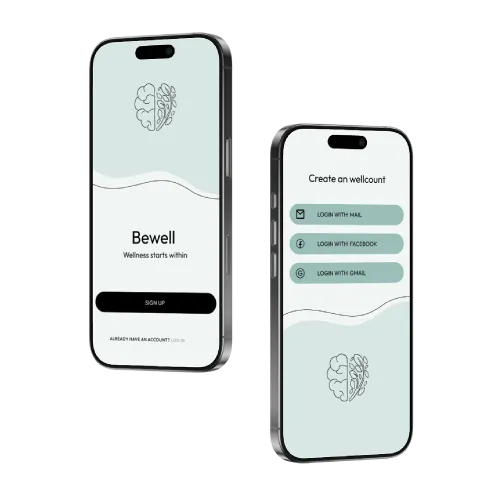

BEWELL is a mental health app concept created during a course focused on agile methods and UX design.
The course combined theory with hands-on work, with a strong focus on how to deliver user-centered solutions through collaboration, communication, and continuous feedback. We worked iteratively, close to the user, and tested ideas early rather than aiming for a “perfect” solution from the start.
A key part of the course was learning how to make conscious decisions around ways of working — choosing the right process depending on the project, and understanding how agile methods can support both creativity and structure in UX design.
Within this context, BEWELL became a project where I explored how to design for something as sensitive and complex as mental health, while still keeping the experience simple and accessible.

We approached the project iteratively, combining research, ideation, and testing throughout the process rather than treating them as separate phases.
Understanding the user
We started by exploring how people relate to their mental health in everyday life. Through surveys and interviews, we looked into:
— How people deal with stress
— What tools they use
— What stops them from prioritizing their well-being
Key insights:
— Users want something quick and easy
— Self-care exists, but isn’t always seen as “mental health”
— Privacy and safety are crucial
— Many existing apps feel overwhelming
Defining a clear direction
Based on these insights, we set a clear foundation for the product:
— Keep it simple and accessible
— Focus on small daily habits
— Create a calm, non-judgmental experience
— Remove anything that adds friction
Ideation & prototyping
I translated insights into flows and early concepts, focusing on core features:
— Daily check-ins / mood tracking
— Simple self-care suggestions
— Clear and minimal navigation
Wireframes quickly evolved into prototypes to test how users interacted with the experience and where improvements were needed.
Iteration through agile workflow
The process was shaped by an agile mindset:
— Test early
— Gather feedback continuously
— Improve in small steps
Instead of building everything at once, I refined the product over time: simplified navigation, adjusted tone to feel more human, removed unnecessary features.
A key realization was that removing complexity often creates more value than adding features.
The final result is a mobile app concept that makes mental health feel more approachable and part of everyday life.
The design is built around:
— A clean and minimal interface
— A calm visual language
— Simple, guided interactions
— Encouraging small, consistent habits
Users can quickly check in with themselves, receive gentle guidance, and build routines without feeling overwhelmed.
Key Learnings — What I Take With Me
— Agile methods strengthen UX through continuous feedback
— Simplicity is essential when designing for sensitive topics
— Tone and trust are just as important as functionality
— Small design decisions can influence long-term behavior